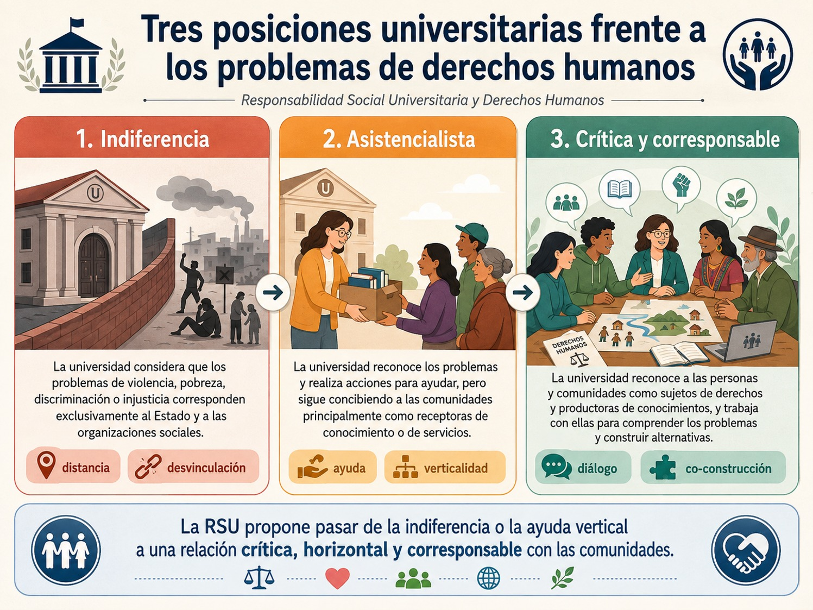

Anteriormente, analizamos que los derechos humanos no pueden reducirse a declaraciones, normas jurídicas o tratados internacionales, ya que su sentido se concreta cuando las personas pueden ejercerlos efectivamente en su vida cotidiana. Esta distinción resulta especialmente importante para nuestro país y región latinoamericana en donde la ampliación de los marcos jurídicos de protección ha coexistido históricamente con desigualdades profundas, violencia, discriminación, pobreza, impunidad y dificultades para acceder a la justicia.
La universidad frente a una contradicción fundamental
Una de las principales tensiones que atraviesan los derechos humanos en América Latina puede expresarse de manera sencilla: existe una distancia entre los derechos reconocidos formalmente y las posibilidades reales que tienen amplios sectores de la población para ejercerlos.
En la región se han producido importantes avances como la transición de numerosos regímenes autoritarios hacia sistemas democráticos, la incorporación constitucional de derechos, la construcción del Sistema Interamericano de Derechos Humanos, la creación de organismos públicos especializados y el desarrollo de una amplia sociedad civil dedicada a su defensa. Sin embargo, estos avances formales no necesariamente se traducen de manera automática en justicia, reparación, igualdad o construcción de paz. En el caso de nuestro país, en específico, existen problemas vinculados con violencia, corrupción, impunidad, homicidios, desapariciones, tortura e inequidad económica.
Es precisamente esta contradicción la que coloca a la universidad frente a una responsabilidad particular pues una institución universitaria no puede resolver por sí misma todos estos problemas, ni puede sustituir al Estado, a las comunidades, a las organizaciones sociales o a las instituciones de justicia, pero tampoco puede permanecer al margen de ellos.
La universidad posee capacidades particulares que ninguna otra institución reúne exactamente de la misma manera pues forma profesionales, produce conocimiento especializado, investiga problemas, construye argumentos, genera información, crea espacios de deliberación y puede vincular diferentes actores sociales. Es por eso que su responsabilidad frente a los derechos humanos no consiste simplemente en pronunciarse moralmente contra las injusticias, sino en poner sus capacidades académicas, científicas, educativas y sociales al servicio de su comprensión y transformación.
Ellacuría (1982) sostiene con particular claridad que la defensa de los derechos fundamentales de las mayorías populares no debería constituir una actividad tangencial de la universidad pues su propia naturaleza como productora de conocimiento, espacio educativo y buscadora de verdad, le impone una responsabilidad ante las condiciones sociales que impiden a amplios sectores ejercer sus derechos.
- Frente a los problemas de derechos humanos pueden distinguirse tres posiciones universitarias:
- i) la indiferencia al considerar que los problemas de violencia, pobreza, discriminación o injusticia corresponden exclusivamente al Estado y a las organizaciones sociales;
- ii) asistencialista cuando la universidad reconoce los problemas y realiza determinadas acciones para ayudar a las personas afectadas, pero continúa concibiendo a las comunidades principalmente como receptoras de conocimiento o de servicios, y;
- iii) crítica y corresponsable coherente con la RSU que hemos venido trabajando, que implica que la universidad reconoce a las personas y comunidades como sujetos de derechos y como productoras de conocimientos y trabaja con ellas para comprender los problemas y construir alternativas.
En el siguiente gráfico podrás visualizar la postura de una universidad frente a esta problemática:

La diferencia puede sintetizarse así: no se trata únicamente de estudiar las violaciones a los derechos humanos, sino de producir conocimiento con capacidad para contribuir a prevenirlas, hacerlas visibles y transformar las condiciones que las producen.
Identificación de los principales retos de México y América Latina en materia de derechos humanos y la contribución de la universidad para afrontarlos
Identificar los retos de derechos humanos implica evitar una lectura fragmentada, por ejemplo, una desaparición, no constituye solamente un problema de seguridad; involucra acceso a la justicia, derecho a la verdad, reparación, capacidades institucionales y protección de las familias. De igual forma, la pobreza tampoco es exclusivamente un problema económico: condiciona el ejercicio de los derechos a la salud, alimentación, vivienda, educación y participación.
Por ello, es importante reconocer un conjunto de problemas interrelacionados como:
1.- La distancia entre el reconocimiento jurídico y el ejercicio efectivo de los derechos
Uno de los principales avances latinoamericanos ha sido la ampliación del reconocimiento constitucional e internacional de los derechos humanos, sin embargo, el problema aparece cuando estas normas no modifican las prácticas institucionales y sociales. En nuestro país las reformas jurídicas constituyen avances importantes, pero ello no garantiza por sí mismo que las personas accedan efectivamente a la justicia. En la práctica pueden persistir detenciones arbitrarias, malos tratos, tortura, defensas jurídicas deficientes y desigualdades en la aplicación de la ley. Entonces, uno de los principales desafíos consiste en pasar del derecho reconocido al derecho efectivamente ejercido.
- Ahora, ¿Qué puede hacer la universidad? La universidad puede contribuir mediante:
- • investigación sobre la implementación efectiva de las normas;
- • observatorios universitarios de derechos humanos;
- • clínicas jurídicas y proyectos de acompañamiento;
- • evaluación de políticas públicas;
- • construcción de indicadores;
- • formación especializada de profesionales y servidores públicos;
- • sistematización y documentación de casos;
- • propuestas de reforma institucional.
La investigación universitaria resulta especialmente importante porque permite preguntar no solamente qué dice la ley, sino qué ocurre realmente con las personas cuando intentan ejercer sus derechos.
2. Violencia, desaparición, tortura, impunidad y acceso a la justicia
Conde, (2023), identifica como obstáculos particularmente graves la violencia, la corrupción y la impunidad. Menciona expresamente homicidios, desapariciones y tortura, vinculándolos además con problemas institucionales y con la dificultad para garantizar justicia y reparación. Este problema permite comprender que seguridad y derechos humanos no pueden presentarse como objetivos contrapuestos. En ese sentido, una política que pretende combatir la violencia vulnerando derechos puede terminar reproduciendo nuevas violencias.
La cuestión fundamental es entonces: ¿Cómo construir seguridad y paz sin renunciar a los derechos humanos?
Esta pregunta resulta particularmente importante para las universidades, porque detrás de la violencia existen fenómenos que requieren ser estudiados interdisciplinariamente: desigualdad, exclusión de las juventudes, economías ilegales, debilidad institucional, corrupción, dinámicas territoriales, ausencia de oportunidades educativas y laborales, fragmentación comunitaria y formas culturales de normalización de la violencia
- Respecto a esto las universidades, en general, y la nuestra en particular pueden:
- • Documentar, generando información rigurosa sobre violencias y violaciones de derechos;
- • Explicar, investigando sus causas estructurales y no solamente sus manifestaciones inmediatas;
- • Acompañar, colaborando con víctimas, familias y organizaciones;
- • Proponer, diseñando modelos de prevención, atención, reparación y reconstrucción comunitaria;
- • Formar, preparando profesionales capaces de incorporar el enfoque de derechos humanos en seguridad, justicia, salud, educación y políticas sociales.
De esta manera, las universidades pueden ayudar a sustituir respuestas exclusivamente reactivas por aproximaciones integrales.
3. Desigualdad, pobreza y derechos económicos, sociales y culturales
Por otra parte es importante recordar que las violaciones de derechos humanos no ocurren únicamente cuando existe violencia física ejercida directamente contra una persona, sino también existe vulneración cuando amplios sectores carecen de condiciones materiales para vivir dignamente. Es en este sentido que nuestros autores advierten que la pobreza, desigualdad y exclusión limitan el ejercicio de los derechos económicos y sociales y que determinados modelos económicos pueden profundizar esas desigualdades. Y en particular, desde la universidad debemos poner mucha atención en los problemas vinculados con trabajo, salarios, informalidad y condiciones laborales en general.
Esto permite establecer una idea fundamental: la pobreza no debe analizarse únicamente como carencia económica, sino también como una situación que restringe capacidades para ejercer derechos pues una persona que carece de ingresos suficientes puede encontrar limitaciones simultáneas para ejercer sus derechos a la alimentación, vivienda, salud, educación, cultura, movilidad y participación. Es por ello que la universidad puede contribuir investigando estas interdependencias y evitando reducir los problemas sociales a indicadores aislados.
4. Desigualdad y violencia de género
Como viste en la UCA Perspectiva de Género para el Diseño Social, la igualdad formal entre mujeres y hombres no ha eliminado las desigualdades presentes en las relaciones laborales, políticas, sociales, familiares y jurídicas. Igualmente, nuestros autores señalan que las dificultades relacionadas con acceso a la justicia, discriminación, la transgresión de los derechos laborales y derechos reproductivos, nos llevan a la necesidad de incorporar perspectivas que permitan comprender las condiciones específicas en las que viven las mujeres así como estudiar de qué manera determinadas desigualdades se cruzan con la pobreza, la pertenencia étnica y otros factores sociales.
- Desde una perspectiva universitaria, el desafío no consiste únicamente en estudiar la violencia contra las mujeres después de que ocurre, es necesario investigar:
- • las estructuras sociales que producen desigualdad;
- • los estereotipos de género;
- • la división sexual del trabajo;
- • las desigualdades laborales;
- • los sistemas de cuidados;
- • la violencia institucional;
- • el acceso diferenciado a la justicia;
- • las formas en que género, clase, territorio y pertenencia cultural se entrecruzan.
De esta forma, la universidad puede contribuir tanto al conocimiento de las violencias como a su prevención y transformación.
5. Racismo, discriminación y derechos de los pueblos indígenas
Otro desafío central para México y América Latina corresponde a los derechos de los pueblos indígenas. Rodolfo Stavenhagen (2003), señala la necesidad de ampliar la investigación universitaria hacia campos como los derechos indígenas, la educación intercultural y multilingüe, los derechos lingüísticos, la identidad cultural, el derecho consuetudinario, la libre determinación y la protección de los conocimientos indígenas. También advierte que, en la investigación debemos ser cuidadosos pues los indicadores nacionales agregados pueden ocultar profundas desigualdades internas entre poblaciones.
Este planteamiento conecta directamente con las epistemologías del Sur revisadas previamente ya que el problema no consiste únicamente en que determinados grupos tengan menos acceso a derechos sino que existe también una dimensión epistémica, que, como vimos, determinados conocimientos, lenguas y formas de comprender el mundo han sido históricamente subordinados.
- Por ello, la universidad puede contribuir mediante:
- • Investigación intercultural, construida con los pueblos y no solamente sobre ellos;
- • Producción de información desagregada, que permita hacer visibles desigualdades ocultas en los promedios nacionales;
- • Protección de conocimientos comunitarios, evitando su apropiación indebida;
- • Reconocimiento de derechos lingüísticos y culturales;
- • Diálogo entre sistemas de conocimiento, incorporando saberes comunitarios y científicos sin establecer automáticamente una jerarquía entre ellos.
Así, la contribución universitaria requiere pasar de considerar a las comunidades como poblaciones de estudio a reconocerlas como sujetos políticos y epistémicos.
6. Migración, desplazamiento y vulnerabilidad territorial
Otro de los retos a los derechos humanos que enfrenta nuestra región y país son los flujos migratorios entre México y América Central, por lo que este fenómeno es una de las áreas críticas que exigían investigación, cooperación y formulación de propuestas. Específicamente en nuestro país, las desapariciones y distintas formas de violencia pueden afectar en especial a personas migrantes, defensores, periodistas y otros grupos, por lo que la participación social resulta fundamental para enfrentar fenómenos que rebasan las capacidades estrictamente policiales.
La movilidad humana exige una aproximación que integre múltiples derechos: vida, seguridad, identidad, salud, trabajo, vivienda, no discriminación, acceso a la justicia y unidad familiar. Para la universidad, esto representa un campo privilegiado de trabajo interdisciplinario donde pueden encontrarse derecho, sociología, economía, antropología, psicología, salud, geografía y políticas públicas.
7. Libertad de expresión, democracia y participación
Ahora que estamos reconociendo que los problemas sociales, entendidos como retos a los derechos humanos, están interconectados, es importante reconocer que las democracias requieren algo más que elecciones. Necesitan condiciones que permitan a las personas expresarse, informarse, organizarse y participar. Nuestros autores advierten sobre los riesgos para la libertad de expresión, particularmente la violencia e intimidación contra periodistas, así como nuevas tensiones asociadas con vigilancia y privacidad, también plantea la necesidad de ampliar los espacios para la expresión autónoma de la ciudadanía. Esta dimensión es fundamental porque la defensa de los derechos humanos requiere una sociedad capaz de hacer visibles las injusticias.
- La universidad es un espacio privilegiado para:
- • Defender la libertad académica;
- • Fortalecer capacidades argumentativas;
- • Formar ciudadanía crítica;
- • Generar información independiente;
- • Organizar debates públicos;
- • Combatir la desinformación;
- • Proteger el pensamiento crítico;
- • Construir espacios de deliberación plural.
Pero para hacerlo de manera creíble, quienes formamos parte de esta casa de estudios debemos garantizar estas libertades también al interior de nuestra universidad.
8. Modelos de desarrollo, medio ambiente y conflictos territoriales
Por último, pero no menos importante para esta UCA, nuestros autores incorporan otra problemática que conecta directamente los derechos humanos con el desarrollo sostenible pues hacen énfasis en que determinados proyectos económicos, energéticos o de infraestructura pueden generar conflictos cuando las decisiones son tomadas sin participación adecuada de las comunidades o cuando los beneficios y costos se distribuyen de manera profundamente desigual. Así, se relaciona a los modelos de desarrollo con incremento de desigualdad, pobreza y deterioro de los bienes naturales, y plantea la necesidad de buscar alternativas compatibles con la sostenibilidad y los derechos.
Esto obliga a superar la falsa disyuntiva: desarrollo o derechos humanos. La pregunta correcta es: ¿qué tipo de desarrollo puede considerarse legítimo si vulnera los derechos de las comunidades que habitan los territorios donde se realiza?
Aquí la universidad puede aportar evaluaciones ambientales y sociales, conocimientos técnicos, análisis económicos, mecanismos participativos, mediación, diseño territorial y diálogo de saberes. Pero debe hacerlo evitando colocarse automáticamente del lado del conocimiento experto frente al conocimiento comunitario.
Con todo esto, no está por demás decir que una universidad que conoce la realidad desde quienes experimentan sus injusticias es porque conoce la realidad social no solamente como un dato estadístico o como objeto de políticas, sino desde la experiencia de quienes sufren las consecuencias de las estructuras sociales. Esto produce un desplazamiento importante: no estudiar únicamente qué les ocurre a las personas cuyos derechos son vulnerados, sino comprender qué revela su experiencia sobre el funcionamiento de nuestra sociedad.
- Ejemplos:
- • La pobreza revela cómo se distribuyen los recursos.
- • La discriminación revela cómo se construyen jerarquías sociales.
- • La violencia contra las mujeres revela relaciones históricas de poder.
- • La exclusión indígena revela formas de racismo y colonialidad.
- • La precariedad laboral revela cómo se distribuyen los costos del sistema económico.
- • La degradación ambiental revela qué modelo de desarrollo se privilegia y quiénes soportan sus consecuencias.
De esta manera, los derechos humanos se convierten también en una perspectiva para conocer críticamente la realidad.
¿Cómo puede contribuir concretamente la universidad?
En el siguiente gráfico puedes observar el papel de la universidad y la RSU en el contexto de los retos para los derechos humanos:

Otro papel fundamental consiste en la capacidad universitaria para reunir participantes que frecuentemente trabajan de manera separada. Las universidades pueden llevar a cabo acciones de colaboración mutua, organismos internacionales, instituciones gubernamentales y organizaciones de la sociedad civil. La universidad puede funcionar entonces como espacio de encuentro entre saberes diferentes; espacio de traducción entre conocimiento académico, experiencia comunitaria y decisiones públicas; espacio de deliberación donde se confronten perspectivas diferentes sin recurrir a la violencia; espacio de innovación para construir respuestas frente a problemas complejos; y espacio de vigilancia crítica capaz de evaluar las consecuencias sociales de políticas, tecnologías y proyectos de desarrollo. Observa el siguiente diagrama:

En síntesis, a partir de la perspectiva de la interculturalidad crítica revisada anteriormente que frente a los retos de derechos humanos que enfrentan nuestro país y región la universidad debe ser no sólo para la comunidad sino con la comunidad reconociendo que las comunidades poseen conocimientos, experiencias, capacidades organizativas y propuestas propias. La aportación universitaria consiste entonces en complementar esas capacidades mediante investigación científica, sistematización, argumentación, formación profesional, recursos técnicos y espacios de articulación. Mira el siguiente diagrama de síntesis:

Ahora bien, todo lo anterior tiene una consecuencia directa para tu formación universitaria ya que frente a todos estos problemas no basta con preguntar ¿Qué puede hacer la universidad?, también necesitas comenzar a preguntarte ¿Qué puedo hacer yo como profesionista en el futuro? Si bien cada disciplina tiene posibilidades diferentes de resolver esta pregunta lo que realmente esta pregunta nos hace pensar es ¿de qué manera mis conocimientos y decisiones profesionales pueden contribuir a garantizar -o pueden terminar vulnerando- los derechos de otras personas, comunidades y territorios?
En suma, el papel de las universidades frente a los retos de los derechos humanos en México y América Latina no puede reducirse a impartir cursos especializados ni a emitir declaraciones institucionales. Implica reconocer que los problemas de violencia, impunidad, pobreza, desigualdad, discriminación, exclusión, deterioro ambiental y debilitamiento de la participación democrática constituyen también problemas de conocimiento, formación y responsabilidad social. La universidad posee la capacidad de hacer visibles las injusticias, comprender sus causas, formar profesionales responsables, construir conocimiento con las comunidades y generar alternativas. Pero para hacerlo necesita abandonar la pretendida neutralidad frente a las situaciones que lesionan la dignidad humana y, al mismo tiempo, evitar sustituir la voz de quienes experimentan esas injusticias.
El desafío consiste en construir una universidad capaz de pensar críticamente la realidad para transformarla responsablemente, poniendo su capacidad científica, académica y educativa al servicio de sociedades más justas, democráticas, interculturales y respetuosas de los derechos humanos. Como plantea Ellacuría, la misión histórica de la universidad debe configurarse a partir de la realidad concreta y de las exigencias de quienes ven vulnerados sus derechos.
A continuación te dejamos unas preguntas para problematizar:

- Conde, Francisco (2023). Avances, obstáculos y retos en derechos humanos en México y América Latina, en Una visión desde el Consejo de la CDHDF. México: Colección CDHCM.
- Ellacuria, Ignacio (1982). Universidad, derechos humanos y mayorías populares, en Estudios Centroamericanos ECA, 791-800.
- Stavenhagen, Rodolfo (2003), Líneas de investigación e inventario de proyectos sobre derechos humanos, en La Educación Superior en Derechos Humanos en América Latina y el Caribe. México. UNESCO.
Te recomendamos ver estos videos para profundizar sobre este tema: